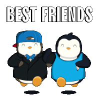
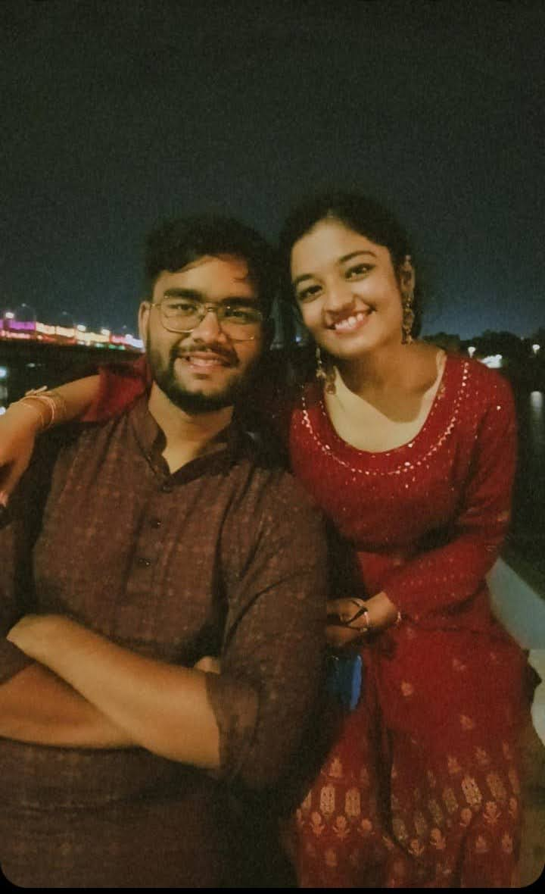

Dear Dammoo....!
Biography of our bond till now
Written By :- Harsh Mehta
Dear Dammoo, this is for you 🤞💖
Friendship is a special bond that can help you sail through the most brutal storms of life. It was i guess the june when i first saw you in school It was that ultimate 11th STD . And ofcouse it was ultimate because of you only Def..At first it was like a proper stranger coming and sitting with us in the whole day of the school from then till getting on more contact via the game of bollywood.Then after coming home me seaching for your name on marker because i asked for your name that day and i was searching for it but i couldnt find it then the next day i asked for the id then you gave it and right after going home i have sent you the request .
We didn’t talked much but at first i felt like a connect we started talking more in diwali ig if my memory is not wrong after a lot and lot of talk i have asked to be a bestfriend on sc by sending a sticker . Writing about all this is so nostelgic yaar .. Atleast in this technical word you will have a good book to make yor children read (Rofl)
Please trun the page..
I even remember in diwali you did a small prank with me texting me 'Teh aavu karyu' followed by 'tara thi aavi umeed nati dont text me from now on' mostly aaj words hata and i was like wohho su thayu and super tensed and god knows what and firr ittna ssara tenion lene ke baad you siad prank thaa you stupid creature bhavnao ke sath khelti hai logo ki hhuhh..!(hahahahahah)
This book i have started just because i dont ever want to forget this what we have the main purpose about me writing this is that only ke i dont wanto forget any of this and ofcouse to see a very beautiful smile on your face.You always doubted about me at first that nothing is permanent but no i had make it to you to the best darla dw this silly stupid heighted bestf will be by your side no matter what.
I got so attached to you because you never judged me even when you didn’t know me well. Thanks for believing in me.We have talked on each and every topic possible at that time changing it to this level friendship .Lol we have also done many of reels text of 'Talking with same person on different topics at different apps'. doing back bitching of people together
We talked for like hours earlier from totally childish talks to the fully qualifed matured persons talk we both have great chat history lol .The first ever pic we clicked was in the annual function in that yellow costume which was totally eww then the second pic was in the freezeland from 1st 2nd to the whole trip of hampta we have very well driven the car of friendship.
Thsnkss.. For always being there for me when needed , My insecurities are way more complicated but you have always taken care of it ,thanks for being my therapiest for me my overthing and jheling my nataks .lol... In the journey of lockdown also we talked a lot i think that was the time we actually got to know each other more .
We even fought on some topics but never resulting into giving up that is the bestest thing we have. The shetani you tesing me all day , roasting me hhuh , teaming up with others to tease me are not the goodd things broo but you r tooo cute to get said anything (rofl).
Frankly, I can keep talking about you all day and night, and still be left with a million more things to say. You are the most amazing individual I have ever met. And I cannot imagine my life without you in it. You are one of the greatest you can say achievement(hhahahah) of my life. I hope we continue being best friends till the last breaths of our lives.
I miss you when something good happens to me, and you aren’t there to
share the moment. I miss u when someone misunderstands me because you
are the one who understands me the most. I miss you when I cry or
laugh because you wipe my tears and make me laugh even more. I miss
you always, but I miss you the most when I am alone, and I think about
all the times we have spent with one another because I cherish those
comforting memories always and forever in my heart.
I have to write so much more but for the start this is it for you will keep updating this keep smiling cutiee
I adore you for everything you are, for all of our happy memories
together, for our supportive interactions, and for all the ways you
have helped me grow. I wouldn’t have done it any other way because a friend
like you is a rare diamond I dearly value. Love you, damoooo darlinggg.This name given to you is so perfectly perfect .
......This is Not limited here I will keep adding to this making it to be the best thing that you read after years and you just give me a call and say ghodssss leetss meet urcutejeanss . The first publishing of this book will be when we will be together . So if u liked my this thing or gesture just give me a very tight hug (especially the levelled one Rofl).Will keep surprising you with things like this no matter what lobb and lovee yaaa
Can we hang out soon?

"I hold our friendship close to my heart, cherishing every moment we share. The thought of losing it is something I never want to bear...!"
Jan 21,2024
Love in human form,
My heart melts every time,
My smile rhymes with yours.
Like every shade of red in you,
I wanna write my 365 days,
With the things you love to talk about,
While your silence being the Sundays.
In your Brightness, the stars align,
A wave of feelings, sweet and friendly.
Our laughter dances like a gentle breeze,
Together, we're a timeless, cherished ease.

Always Moving , Jumping , Walking ,Running with a glam on face .So I call this ... "THE HAPPY US"
The Day to be remembered . My bestiee wore a saree today for the first time .I knew it she would look the most beautiful but she doubted it . I went to see her at her college gate . I was legit happy to go there and see her in a best look she has ever got since now. She was wearing a black saree with a very nice necklace in her neck looking too gorgeous . She could not come out because of her stupid college who were not allowing her to come out we were seeing each other from different sides of a gate just like in jails prisoners and his meeting member do .
I also could gift her the feb gift and even the bouquet from the last month in which her luck is not really good but today was the day i was waiting for so long and eating her head about wearing a saree so ye it is 09-02-2024 and def. it was worth the wait moment for me will always rem about this till last . Obviously wanted to hug u but couldn't So assuming that i will get one really soon Atleast.

Mene kaha -
Mere liye jo tu hai
Vo sab thodi hai
Khaas tu ek hai
Hazaar thodi hai
Tere liye jo mehsoos hota hai
Kisi or ke liye vo zazbaat thodi hai
Khaas bass tu ek hi hai
Hazaar thodi hai
Tujhme jo baat hai
Vo baat kisi or mein thodi hai
Khaas bass tu ek hi hai
Hazaar thodi hai
Meri chuppi se meri baat smjhti hai
Vo gun kisi or ke pass thodi hai
Khaas bass tu ek hi hai
Hazaar thodi hai
Teri muskurahat mei jo taakat hai
Kisi or ke bss ki baat thodi hai
Khaas bass tu ek hi hai
Hazaar thodi hai
Tujhe saree me dekhne se jo sukoon hai
Vo kisi or ko dekhne mein thodi hai
Khaas bass tu ek hi hai
Hazaar thodi hai
On this day I would like to write something for you .
There is no such day as a Women day every day is a women day this is just to keep you reminded that how a women is .
"Happy Women's Day to the most incredible woman I know, my dear cutiee DAmmoo. You express strength, grace, and love in everything you do. Your determination inspires me, and your kindness warms my heart. Today, I want to take a moment to honor you. You are a my light in this world, shining brightly with your intelligence, cuteness, and by my friendship (lol). Thank you for being such an amazing friend and for making the world a better place just by being you. Here's to you, Helly, may you continue to conquer mountains and inspire everyone around you. Happy Women's Day!".ur this man will be always with you no matter what it takes .A huge respect to you my Dammoo...! 
Much like the resilient sunflower, you stand tall and strong, inspiring those around you to reach for the sun and embrace life's challenges with courage and determination. Your kindness and compassion bloom like a garden of roses, spreading love and joy wherever you go.
On this day just keep in mind no matter how you smell how is your color how is your nature , I will be there at each stage of your life , consider my that teny-tiny bouquet for the internationnal flowers day . I do get angry on you for very small things and ig by my overthinking and do even tell things that hurts .I am sry for that too . I always lovee yaa no matter what and I just dont want to loose us , I dont want to loose you . and ig i have that much right to tell u things so yeah have a wonderful day with me because we are meeting tommorow definetly. Lob Yaaa 🌸
It was 25th march and out of box i got a wonderful and like what a gift from her . and that too came with a funny stry her friend megha who got it for her didn't gave her in any bag or something lol and she gave her in front of me . hahahahah and damooo told me on activa harshhh this iss for you a sunflower . Wese soch ke diya hai nice nice subah uthne wale ko sunflower (hahahhah).but yeah it was like totally not expected . if guys someone else reading it in future as a novel or something sunnloooo bestieee hoo toh esii warnaa naa hooo ...!! Lots of Lotss off lovee to u broo ssly...!
Phases of friendship...!
The best friendship doesn't mean only good things happening in between the two . It also involves very different kind of phases it is in which i m currently going on it was going on very perfectly . then some things happend in her life.I dont have any problem in it but one should know that getting some unexpected things in life doesn't mean you just start focusing on that . you have to balance between everything. I am hear with u for u wherever u want and even if u dont want then there should be a some point of ur responsibilit to provide it the equal importance, time and everything . U r the best in everything just see from my pov what i would be facing , what i would be feeling. Def not telling u to not getting involving in new stuff ... never and i m noone to tell u that even ... bt ...As u know i take our friendship even more seriously i will def expect u to give some attention , some love , some importance and it does not take much of it.Easies solution is just talk to me when u r talking to me no pne else should be there . In the other times i will not insist u to talk to me ... It feels somewhat like disrespectful when u do talk to multiple ppl while talking to me and i am just seeking and waiting for a reply. Or the other way is we both chat willingly when we both are free accoring to our convinience (which will be the scenerio after 3 4 yrs when we all willl be working ) so if u want to follow that tell me so i just dont push u or force you to do so... choice is yours how u want it however u r comfortable .
Read